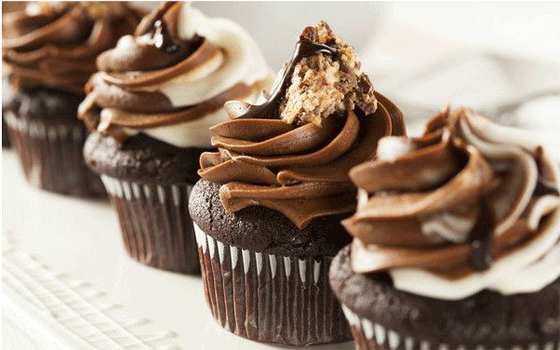

Cupcake炫酷的精巧设计，带红门店生意！

文化背景
和精致仿佛的法式甜点相比，Cupcake充满着美国式的气氛，简单，自由，充满快乐。Cupcake是美国人生活的一部分，也是最容易操作的甜点。主妇从烤箱里端出新鲜热辣的蛋糕，小孩子等不及放凉，就一边烫着手一边偷吃了。长大后，Cupcake变成送给朋友的礼物，给自己的安慰，称呼爱人的昵称，甚至金融危机来袭，还可以笑着自嘲说：至少我还买得起Cupcake。
Cupcake译为杯型蛋糕。在英国通常称为fairy cake，仙女蛋糕，在美国也叫做patty cake or cup cake。
Cupcake和精致的法式甜点相比，充满着美国式的简单、自由气氛，充满快乐。Cupcake是美国人生活的一部分，也是最容易操作的甜点。主妇从烤箱里端出新鲜热辣的蛋糕，小孩子等不及放凉，就一边烫着手一边偷吃了。Cupcake也是人们最喜欢送给朋友的礼物，Cupcake是平民的，也是侈时尚的，很多人说Cupcake在美国之外的国家流行起来，就是因为《欲望都市》的影响。
超模Heidi Klum送给维多利亚的生日礼物，就是一天一个，一年365个的Cupcake。可见这款蛋糕有着多么丰富的变化，又有着多么大的魅力。
320 251评论区
comments
Copyrights @2016 All Rights Reserved By Steak House